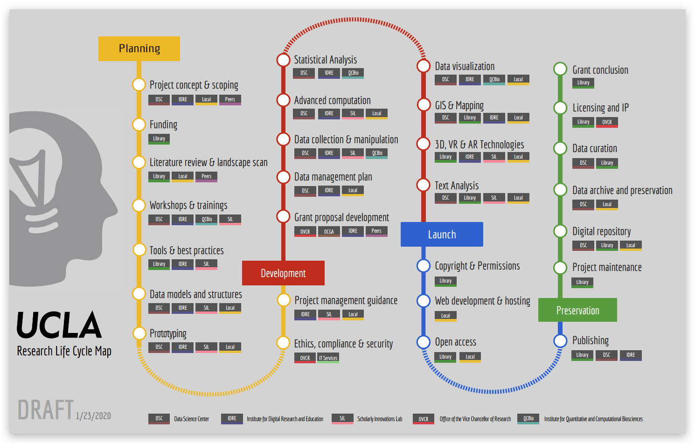

Overview
The UCLA Research Life Cycle Map (RELCY) aims to provide a roadmap that meets the needs of UCLA researchers by embedding institutional research support services into the research process. It is built at the institutional level with broad purposes: facilitating strategic planning and a campus-wide solution to researchers’ needs, and connecting the services to the researchers themselves. It promotes infrastructure building and encourages partnerships within and beyond the campus. It elaborates the research processes and their associated services and links these points to various campus resources. The Research Life Cycle map provides unified support to researchers during their entire research lifecycle and it will keep evolving and developing.
- See the list of phases
- Interact with the research life cycle map
- Download a printable version of the research life cycle